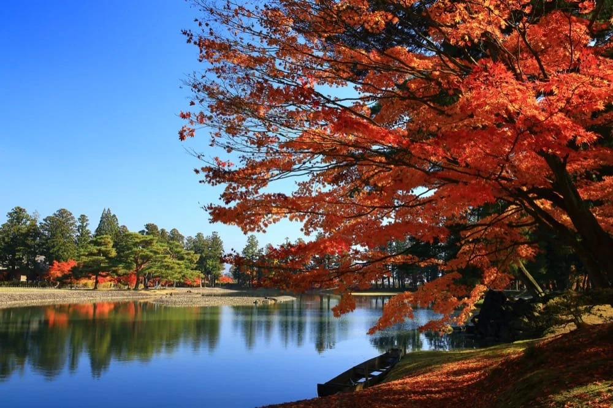

黄金に輝く黄金堂や秋の紅葉が感動的な美しさ 2011年に世界遺産に登録。平安時代に奥州藤原氏の手によって創設された寺院。贅沢に金 泊を使って作られた黄金堂をはじめとし、3000点以上の貴重な重要文化財を見ることがで きる。 秋の見どころ 中尊寺の境内に色づく紅葉と水鏡の弁財天同。鮮やかな朱色が水に反射して実に美しい

黄金に輝く黄金堂や秋の紅葉が感動的な美しさ 2011年に世界遺産に登録。平安時代に奥州藤原氏の手によって創設された寺院。贅沢に金 泊を使って作られた黄金堂をはじめとし、3000点以上の貴重な重要文化財を見ることがで きる。 秋の見どころ 中尊寺の境内に色づく紅葉と水鏡の弁財天同。鮮やかな朱色が水に反射して実に美しい
かっこうだんご
タイトル通り、空を飛んでくる団子です。初めて知った時は驚きました！川を団子が飛んでくるんです よ！ お金を入れてカンカンと木を叩くと、反対側でおじいちゃんが紐を引っ張ります。少し待つとお団子とお 茶の入ったタルが飛んでくるんです。ここで買うと500円、店舗に行くと450円。50円は手間賃ですね。
平泉黄金餅
一つ一つ、透明のケースに入れられた個包装タイプ。白ごまよりも色が濃い、黄金色のご まがたっぷりとまぶされ、香ばしさが漂います。もっちりとやわらかい舌触りと、たっぷ りの金ごまが口の中でぷちぷちと弾ける食感がこれまた美味～～